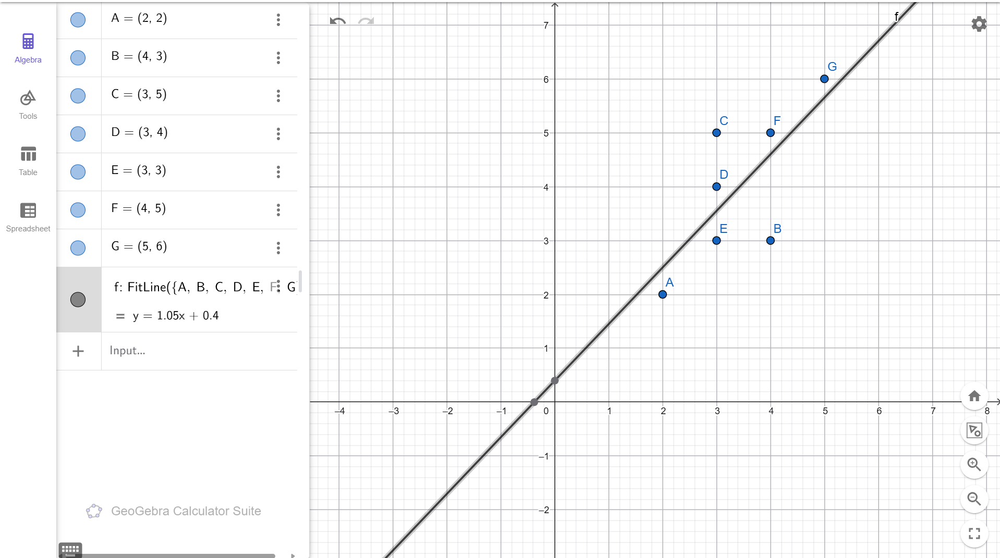
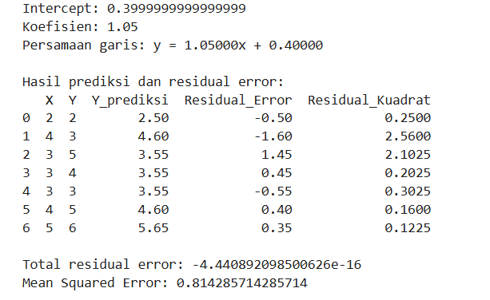
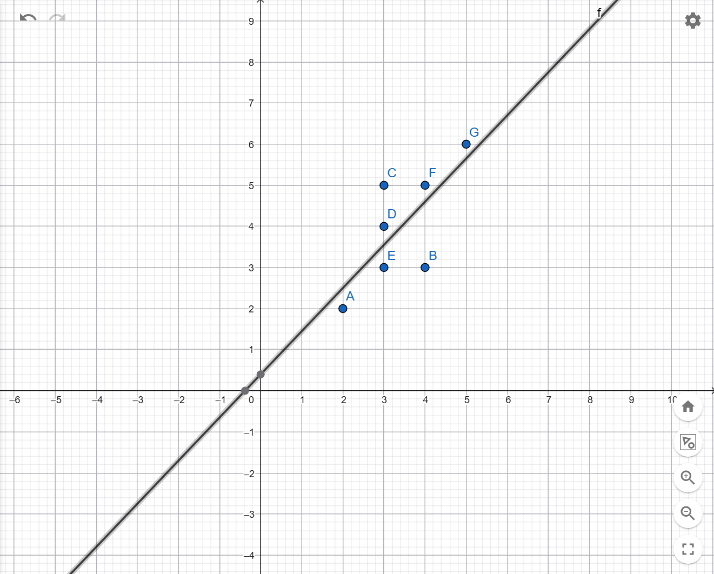
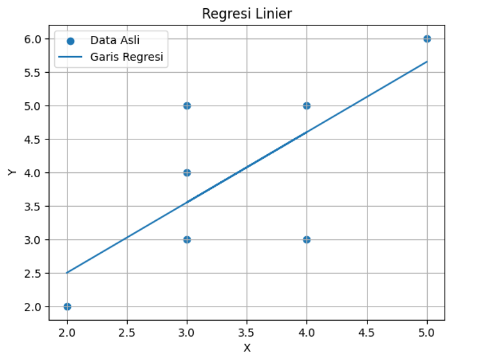

Analisis Data Menggunakan Regresi Linier#
Contents#
Penjelasan Materi
Tugas
Data yang Digunakan
Kode Program Python
Penjelasan Kode Program
Hasil Output Program
Pembahasan Hasil
Visualisasi Grafik
Kesimpulan
1. Penjelasan Materi#
Regresi linier adalah metode analisis data yang digunakan untuk mengetahui hubungan antara variabel bebas X dan variabel terikat Y. Tujuan dari regresi linier adalah mencari garis terbaik yang dapat mewakili pola hubungan data.
Bentuk umum persamaan regresi linier sederhana adalah:
Keterangan:
\(y\) adalah nilai hasil prediksi
\(x\) adalah nilai variabel input
\(a\) adalah koefisien regresi atau kemiringan garis
\(b\) adalah intercept, yaitu nilai \(y\) saat \(x = 0\)
Pada proyek ini, regresi linier digunakan untuk mencari hubungan antara data X dan Y. Perhitungan dilakukan menggunakan library sklearn, yaitu LinearRegression, kemudian hasil prediksi dibandingkan dengan data asli untuk mendapatkan residual error.
Selain menggunakan library sklearn, koefisien regresi juga dapat dicari secara analitik menggunakan persamaan matriks berikut:
Residual error adalah selisih antara nilai asli dan nilai hasil prediksi.
Semakin kecil nilai residual error, maka hasil prediksi semakin dekat dengan data asli.
Selain residual error, digunakan juga residual kuadrat dan Mean Squared Error atau MSE.
MSE digunakan untuk mengetahui besar rata-rata kesalahan prediksi model regresi.
2. Tugas#
Proyek ini digunakan untuk membuat analisis data menggunakan Regresi Linier.
Pada proyek ini dilakukan beberapa tahapan analisis data menggunakan metode regresi linier sederhana. Analisis dilakukan menggunakan bahasa pemrograman Python dengan bantuan library sklearn.
Tahapan yang dilakukan pada proyek ini meliputi:
Membuat program untuk menghitung koefisien regresi menggunakan library
LinearRegressionMenginput data X dan Y ke dalam program Python
Menghitung nilai prediksi berdasarkan model regresi linier
Menghitung residual error
Menghitung residual kuadrat
Menghitung Mean Squared Error (MSE)
Menampilkan visualisasi grafik regresi linier menggunakan
matplotlib
Selain menggunakan library sklearn, pada proyek ini juga digunakan konsep perhitungan analitik regresi linier menggunakan persamaan matriks berikut:
Persamaan tersebut digunakan untuk mencari nilai koefisien regresi secara matematis menggunakan operasi matriks.
Tujuan dari proyek ini adalah memahami cara kerja regresi linier dalam melakukan prediksi data dan mengetahui hubungan antara variabel X dan variabel Y berdasarkan data yang digunakan.
3. Data yang Digunakan#
Data yang digunakan pada proyek ini adalah data sederhana yang terdiri dari variabel X dan variabel Y.
Variabel X digunakan sebagai variabel bebas atau input, sedangkan variabel Y digunakan sebagai variabel terikat atau output.
Data yang digunakan adalah sebagai berikut:
Titik |
X |
Y |
|---|---|---|
A |
2 |
2 |
B |
4 |
3 |
C |
3 |
5 |
D |
3 |
4 |
E |
3 |
3 |
F |
4 |
5 |
G |
5 |
6 |
Data tersebut kemudian dimasukkan ke dalam program Python menggunakan pandas.DataFrame.
Hubungan antara data X dan Y selanjutnya dianalisis menggunakan metode regresi linier untuk mengetahui pola hubungan antar data serta menghasilkan garis regresi terbaik berdasarkan data yang tersedia.

4. Kode Program Python#
Kode program berikut digunakan untuk melakukan analisis regresi linier menggunakan bahasa pemrograman Python dengan bantuan library pandas, matplotlib, dan sklearn.
Program digunakan untuk:
Membuat data X dan Y
Melatih model regresi linier
Menghitung nilai prediksi
Menghitung residual error
Menghitung residual kuadrat
Menghitung Mean Squared Error (MSE)
Menampilkan grafik regresi linier
import pandas as pd
import matplotlib.pyplot as plt
from sklearn.linear_model import LinearRegression
# Data
data = pd.DataFrame({
"X": [2, 4, 3, 3, 3, 4, 5],
"Y": [2, 3, 5, 4, 3, 5, 6]
})
# Variabel X dan Y
X = data[["X"]]
Y = data["Y"]
# Model regresi linier
model = LinearRegression()
# Training model
model.fit(X, Y)
# Mengambil intercept dan koefisien
intercept = model.intercept_
koefisien = model.coef_[0]
print("Intercept:", intercept)
print("Koefisien:", koefisien)
print(f"Persamaan garis: y = {koefisien:.5f}x + {intercept:.5f}")
# Prediksi
data["Y_prediksi"] = model.predict(X)
# Residual error
data["Residual_Error"] = data["Y"] - data["Y_prediksi"]
# Residual kuadrat
data["Residual_Kuadrat"] = data["Residual_Error"] ** 2
# Mean Squared Error
mse = data["Residual_Kuadrat"].mean()
print("\nHasil prediksi dan residual error:")
print(data)
print("\nTotal residual error:", data["Residual_Error"].sum())
print("Mean Squared Error:", mse)
# Visualisasi grafik
plt.scatter(data["X"], data["Y"], label="Data Asli")
plt.plot(data["X"], data["Y_prediksi"], label="Garis Regresi")
plt.title("Regresi Linier")
plt.xlabel("X")
plt.ylabel("Y")
plt.legend()
plt.grid(True)
plt.show()
5. Penjelasan Kode Program#
5.1 Import Library#
Pada program ini digunakan beberapa library Python untuk membantu proses analisis data dan visualisasi grafik.
Library pandas digunakan untuk membuat dan mengolah data dalam bentuk tabel atau DataFrame.
Library matplotlib.pyplot digunakan untuk menampilkan grafik hasil regresi linier.
Library LinearRegression dari sklearn.linear_model digunakan untuk membuat model regresi linier.
5.2 Membuat Data#
Kode digunakan untuk membuat data X dan Y ke dalam bentuk tabel menggunakan pandas.DataFrame.
Data yang dimasukkan terdiri dari beberapa pasangan nilai X dan Y yang nantinya digunakan dalam proses regresi linier.
5.3 Menentukan Variabel X dan Y#
Variabel X digunakan sebagai variabel bebas atau input.
Variabel Y digunakan sebagai variabel target atau output yang akan diprediksi menggunakan model regresi linier.
5.4 Membuat Model Regresi Linier#
Kode digunakan untuk membuat model regresi linier menggunakan LinearRegression().
Model kemudian dilatih menggunakan data X dan Y dengan fungsi fit() agar program dapat mencari hubungan antara kedua variabel tersebut.
5.5 Mengambil Intercept dan Koefisien#
Setelah model selesai dilatih, program mengambil nilai intercept dan koefisien regresi.
Nilai koefisien digunakan untuk menentukan kemiringan garis regresi, sedangkan intercept digunakan untuk menentukan titik awal garis pada sumbu Y.
5.6 Menghitung Nilai Prediksi#
Program melakukan prediksi nilai Y berdasarkan data X menggunakan fungsi predict().
Hasil prediksi tersebut kemudian disimpan ke dalam kolom Y_prediksi.
5.7 Menghitung Residual Error#
Residual error adalah selisih antara nilai asli dan nilai hasil prediksi.
Residual error digunakan untuk mengetahui seberapa jauh hasil prediksi model dibandingkan dengan data asli.
Jika residual error bernilai positif, maka nilai asli lebih besar daripada nilai prediksi.
Jika residual error bernilai negatif, maka nilai prediksi lebih besar daripada nilai asli.
5.8 Menghitung Residual Kuadrat#
Residual kuadrat diperoleh dengan mengkuadratkan residual error.
Tujuan residual kuadrat adalah menghilangkan nilai negatif dan mengetahui besar kesalahan prediksi model.
5.9 Menghitung Mean Squared Error#
Mean Squared Error atau MSE digunakan untuk mengetahui rata-rata kesalahan prediksi model regresi linier.
Semakin kecil nilai MSE, maka model regresi yang dihasilkan semakin baik karena kesalahan prediksi semakin kecil.
5.10 Menampilkan Grafik#
Program menampilkan grafik menggunakan matplotlib.
Fungsi plt.scatter() digunakan untuk menampilkan titik data asli.
Sedangkan fungsi plt.plot() digunakan untuk menampilkan garis regresi hasil prediksi model.
Grafik digunakan untuk mempermudah melihat hubungan antara data asli dan garis regresi yang dihasilkan.
6. Hasil Output Program#
Hasil output dari program regresi linier adalah sebagai berikut:
Intercept : 0.3999999999999999
Koefisien : 1.05
Persamaan garis regresi yang diperoleh adalah:
Program juga menghasilkan nilai prediksi, residual error, residual kuadrat, dan Mean Squared Error (MSE).
Berikut adalah hasil output program Python:

Berdasarkan output program, diperoleh hasil prediksi dan residual error untuk setiap data.
Nilai residual error menunjukkan selisih antara nilai asli dengan nilai hasil prediksi model regresi.
Selain itu, diperoleh nilai Mean Squared Error sebesar:
Nilai tersebut digunakan untuk mengetahui rata-rata kesalahan prediksi model regresi linier.
7. Pembahasan Hasil#
Berdasarkan hasil output program regresi linier, diperoleh nilai intercept sebesar:
dan nilai koefisien regresi sebesar:
Maka persamaan garis regresi yang diperoleh adalah:
Persamaan tersebut menunjukkan bahwa setiap kenaikan nilai X sebesar 1 satuan akan menyebabkan nilai Y meningkat sekitar 1.05 satuan.
Nilai intercept sebesar 0.4 menunjukkan bahwa ketika nilai X bernilai 0, maka nilai prediksi Y adalah sebesar 0.4.
Program juga menghasilkan nilai prediksi untuk setiap data berdasarkan model regresi linier yang telah dibuat.
Selain itu, program menghitung residual error untuk mengetahui selisih antara nilai asli dan nilai prediksi.
Contoh pada data pertama:
X = 2
Y asli = 2
Y prediksi = 2.50
Maka residual error dapat dihitung sebagai berikut:
Nilai residual error negatif menunjukkan bahwa hasil prediksi model lebih besar dibandingkan nilai asli.
Sedangkan jika residual error bernilai positif, maka nilai asli lebih besar dibandingkan nilai prediksi.
Program juga menghitung residual kuadrat untuk mengetahui besar kesalahan prediksi tanpa dipengaruhi nilai negatif.
Dari hasil perhitungan diperoleh nilai Mean Squared Error sebesar:
Nilai tersebut menunjukkan rata-rata kesalahan kuadrat dari model regresi linier yang digunakan.
Semakin kecil nilai MSE, maka model regresi yang dihasilkan semakin baik karena kesalahan prediksi semakin kecil.
Berdasarkan grafik regresi linier yang dihasilkan, terlihat bahwa garis regresi mengikuti pola data yang cenderung meningkat.
Hal tersebut menunjukkan adanya hubungan positif antara variabel X dan variabel Y, dimana semakin besar nilai X maka nilai Y juga cenderung meningkat.
8. Visualisasi Grafik#
8.1 Menggunakan GeoGebra#
Visualisasi regresi linier juga dilakukan menggunakan aplikasi GeoGebra.
GeoGebra digunakan untuk menampilkan titik-titik data serta garis regresi berdasarkan data X dan Y yang digunakan pada penelitian ini.
Pada grafik terlihat bahwa titik-titik data cenderung mengikuti arah garis regresi yang meningkat.
Selain itu, pada GeoGebra juga diperoleh persamaan garis regresi sebagai berikut:
Persamaan tersebut menunjukkan bahwa hubungan antara variabel X dan variabel Y bersifat positif.
Semakin besar nilai X, maka nilai Y juga cenderung meningkat.
Berikut adalah visualisasi grafik menggunakan GeoGebra:

8.2 Menggunakan Matplotlib#
Visualisasi grafik juga dilakukan menggunakan library matplotlib pada Python.
Grafik menampilkan titik data asli dan garis regresi hasil prediksi model.
Titik data asli ditampilkan menggunakan plt.scatter(), sedangkan garis regresi ditampilkan menggunakan plt.plot().
Berdasarkan grafik yang dihasilkan, garis regresi terlihat mengikuti pola data yang cenderung meningkat.
Hal tersebut menunjukkan bahwa model regresi linier berhasil menggambarkan hubungan antara variabel X dan variabel Y.
Berikut adalah visualisasi grafik menggunakan matplotlib:

9. Kesimpulan#
Berdasarkan hasil analisis data menggunakan metode regresi linier, diperoleh persamaan garis regresi sebagai berikut:
Model regresi linier berhasil digunakan untuk menghitung hubungan antara variabel X dan variabel Y berdasarkan data yang digunakan.
Hasil analisis menunjukkan bahwa variabel X dan variabel Y memiliki hubungan positif, dimana semakin besar nilai X maka nilai Y juga cenderung meningkat.
Program juga berhasil menghitung nilai prediksi, residual error, residual kuadrat, dan Mean Squared Error (MSE).
Nilai Mean Squared Error yang diperoleh adalah:
Nilai tersebut menunjukkan rata-rata kesalahan prediksi dari model regresi linier yang digunakan.
Selain itu, visualisasi grafik menggunakan GeoGebra dan matplotlib menunjukkan bahwa garis regresi mengikuti pola data yang cenderung meningkat.
Dengan demikian, program regresi linier yang dibuat telah berhasil melakukan analisis data dan menghasilkan model prediksi yang sesuai dengan data yang digunakan.